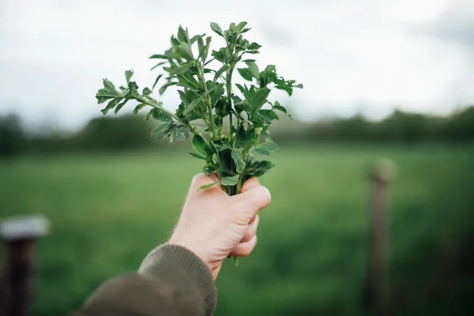

Kitchen Notes
The writing that is not a recipe: technique, storage, equipment, and the long seasonal guide that sits behind the way this site is organized.
A recipe tells you what to do once. A note tells you why, which is what you need the second time, when the apples are different or the oven is somebody else's. These are the things that come up often enough in the testing that they were worth writing down separately rather than repeating at the bottom of every page.
There is one long guide here and a set of shorter notes. The shorter ones are published in full on this page rather than on pages of their own, because each of them is about four hundred words and splitting them across separate pages would waste your time and ours.
Start with the seasonal guide
-

The long guide
Cooking with the seasons: a month-by-month guide
What comes in when, how to buy it well, how long it keeps, and what to do when you have far too much of one thing. Written for a zone 6b year and adjustable from there.
Three pieces of equipment worth the drawer space
Most kitchen equipment is a solution looking for a problem. These three are not, and between them they cover almost everything on this site.
A digital scale. Eight dollars, the size of a paperback, and it fixes baking more thoroughly than any technique will. A cup of all-purpose flour weighs anywhere from four to nearly six ounces depending on whether it was scooped or spooned and how long the bag has been sitting. That spread is the whole difference between a short, tender pastry and one you could resole a boot with. Weighing removes the variable entirely. Put the bowl on, press tare, pour until the number is right.
A bench scraper. A flat rectangle of steel with a handle. It lifts sticky dough off a counter without tearing it, divides it into even pieces, scoops chopped vegetables into a pan in one movement, and cleans a floured surface in two passes. It costs less than a bad spatula and it will outlive the kitchen.
An oven thermometer. Domestic ovens lie, and they lie consistently, which is the useful part. Ours runs twenty-five degrees cool at the stated temperature and always has. Once you know your own oven's offset you can correct for it on every recipe forever. Hang the thermometer from the middle shelf, set the oven to 350°F, give it twenty minutes to settle, and write the real number on a piece of tape stuck inside a cupboard door.
How long things actually keep
Storage advice is usually either vague or alarmist. These are the times we work to, based on a refrigerator at 38°F and a freezer at 0°F.
| Item | Refrigerator | Freezer | Note |
|---|---|---|---|
| Unbaked pie dough, wrapped | 3 days | 3 months | Thaw overnight in the refrigerator, not on the counter. |
| Baked fruit pie | 4 days | Not recommended | The crust goes soft. Cover loosely; an airtight box steams it. |
| Fruit crumble, baked | 4 days | 3 months | Reheat uncovered at 350°F so the topping dries out again. |
| Vegetable soup, no dairy | 4 days | 3 months | Freeze before adding any cream; it splits on thawing. |
| Cooked squash, plain | 5 days | 6 months | Freeze in flat bags; it thaws in minutes that way. |
| Whole winter squash, uncut | — | — | 2 to 4 months somewhere dry at 50°F to 60°F. |
| Apples, firm varieties | 6 weeks | — | Keep away from other produce; they speed up ripening nearby. |
| Soft herbs, stems in water | 1 week | 6 months | Freeze chopped in oil in an ice tray rather than loose. |
When a date and your senses disagree, trust your senses. A table is a guide to planning, not a guarantee about a specific container in a specific refrigerator. If it smells wrong, it is wrong.
Why your pastry shrinks, and what to do
A pie shell that was a neat circle going into the oven and a sad crumpled ring coming out has almost always been stretched. Pastry has a memory: if you pull the round to fit the plate rather than easing it in, the gluten you stretched contracts as soon as the fat melts, and the shell climbs down the sides of the tin.
Three things fix it, in order of how much they help. First, roll the round two inches wider than you need and lift it in rather than dragging it, then press it into the corner with a knuckle so it sits in the angle of the tin without tension. Second, rest the shaped shell in the refrigerator for at least thirty minutes before it goes near heat; cold fat sets the shape. Third, if the recipe blind-bakes, fill the shell properly — right to the rim with weights, not a polite handful in the bottom.
If a shell has already shrunk, it is not wasted. Patch the gap with a scrap of raw dough pressed over the crack, brush it with a little beaten egg white, and put it back for five minutes. The egg seals it well enough that a wet filling will not leak through.
Substitutions that work, and two that do not
Butter for shortening in a pie crust: works, with a change. Butter is about eighty percent fat against shortening's hundred, so the dough takes a little less water and the crust browns faster. Check it ten minutes earlier than the recipe says.
Cornstarch for tapioca in a fruit filling: works, and you need about half as much by volume. The filling will set firmer and look slightly cloudier, which matters in a lattice pie where you can see it and not at all in a crumble.
Rolled oats for quick oats in a crumble topping: works, and is better. Quick oats are cut smaller and go pasty; rolled oats keep their shape and that is where the crispness comes from.
Brown sugar for white in a crumble: works. The topping will be softer and will taste faintly of caramel, and it browns sooner, so drop the oven by fifteen degrees if you are going all brown.
Frozen berries for fresh in a pie: does not work straight across. Frozen fruit carries far more water. Use them from frozen without thawing, add two extra tablespoons of thickener, and expect twelve to fifteen minutes more in the oven. Thaw them first and you will have soup under a lid.
Low-fat milk for cream in a finished soup: does not work. It is not about richness, it is about stability — there is not enough fat to stop the proteins seizing, so it curdles the moment the pan gets anywhere near a simmer. If you want to leave the cream out, leave it out. The squash soup on this site is designed to be good without it.
Reading a recipe before you start
The single habit that prevents the most trouble costs five minutes: read the whole recipe, out loud if it helps, before you touch anything. You are looking for three things. Is there a chilling or resting step, and how long is it? Does anything need to be at room temperature, and did you take it out in time? And is there a point where two things have to happen at once, which is where the burnt butter usually comes from.
Our recipes put the total time at the top including every rest, so a pie that says three hours really does mean three hours from flour to first slice. Where a step can be done a day ahead, the recipe says so in the method rather than hiding it in a note at the bottom.